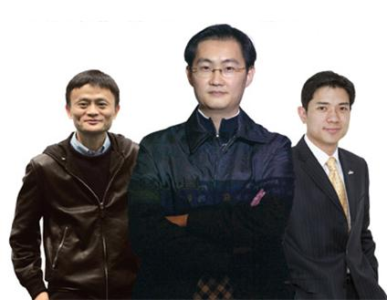
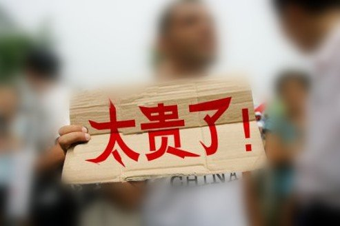
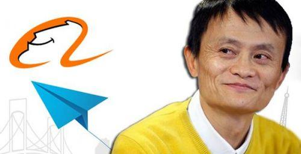
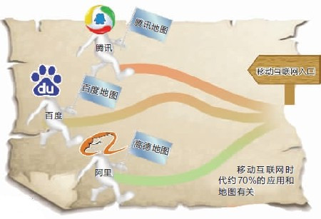
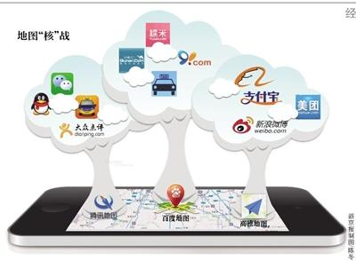
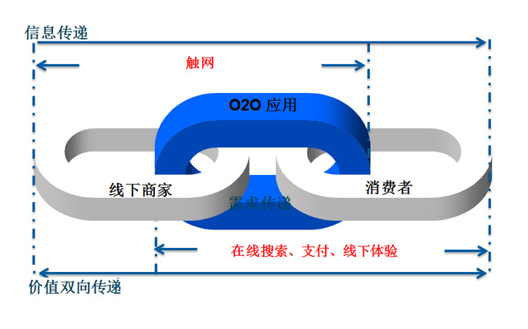
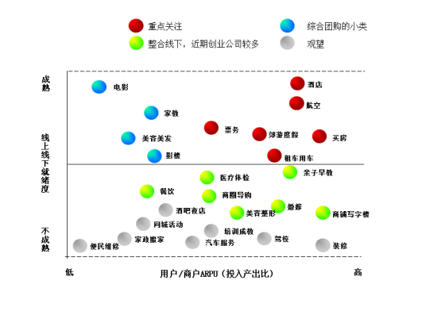
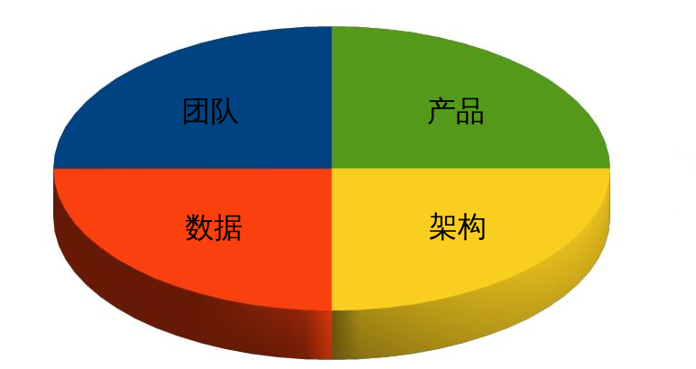
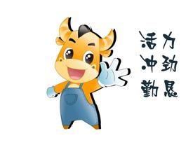
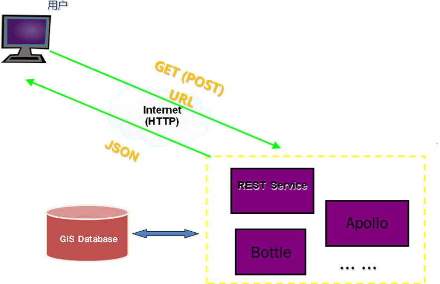

悠悠优势分析报告
段洪义
2014年04月23日
截至2013底中国智能手机保有量5.8亿台。智能手机在这一年得到了进一步普及。特别是受到低端智能机的推动，智能手机保有量大幅增长，这意味着使用智能手机的用户数量取得了非常快的增长，智能手机已成为移动互联网发展的重要载体。
移动互联网行业正在爆发性的成长，未来在移动互联网、云计算、物联网等新技术的推动下，传统行业与互联网的融合正在呈现出新的特点，平台和模式都发生了改变。
一是作为业务推广的一种手段，如食品、餐饮、娱乐、航空、汽车、金融、家电等传统行业的APP和企业推广平台。
二是重构移动端的业务模式，如医疗、教育、旅游、交通、传媒等领域的业务改造。
2013年BAT都干了些什么？

18.5亿美元收购91无线

PPS、糯米网、百分之百数码、TrustGo...
阿里巴巴宣布将以11亿美元现金收购高德公司

新浪微博、天弘基金、陌陌、高德地图、快的、UC、友盟、美团...
相较之下，最低调的是腾讯，其今年最大动作是4.48亿美元注资搜狗，其余则是一连串令人眼花缭乱的、对移动互联网公司的收购，涉及刷机软件、ROM开发商、手机设计公司、移动社交、手机游戏，这些收购关注初创型公司，同时非常密集，其中包括了大名鼎鼎的“阅后即焚”应用Snapchat，今年，腾讯牵头了Snapchat的最新一轮融资。
由来只有新人笑，有谁听到旧人哭。市场险恶，竞争残酷，用户心态日新月异，若是不能时刻谨记创新与求变，很难获得持续的辉煌，并不仅仅是在移动互联网，任何领域皆是如此。
在上述长长一串“欲望清单”背后，并不代表着BAT激进前行的兴奋感，更多的，应该是不安。
为何网络巨头不约而同地发展地图？

地图的意义不仅是指路，更在于图上承载的信息。
移动互联网入口之争

手机地图成为衣食住行等一系列生活服务的入口...
O2O

online/offline都有缺陷，线上线下的双线融合正成为不可逆转的趋势
70%以上的传统服务业未被互联网化

在中国网购仅占零售业比重5%，在电子商务最发达的美国，线下消费的比例依旧高达92%
核心竞争力

产品、团队、数据、架构是悠悠团队的核心竞争力
悠悠是一个学习型团队
悠悠是一个学习型团队，共建、协作、分享、沉淀、沙龙是悠悠的关键词。
悠悠是一个非常年轻的团队

一堆 80 后的骨干，平均年龄低于30岁。
悠悠是一个鼓励个人发挥创造力的团队
悠悠多数情况倾向于只给方向，自己发挥。
悠悠是一个沟通非常畅快的团队
没有任何一个意见是不被倾听的，没有任何一个想法是不能讨论的。
悠悠是一款驾车体验优良的产品
专业与全面永远不是一个维度的探讨，悠悠导航一直是最专业用户体验最好的导航产品。
悠悠是一个对数据有感情的团队
瑞图、四维、易图通、内业系统、外业系统、DES、KV、Tele……
构建数据闭环
内业生产系统的可以实现数据的增量发布，提升数据编辑效率，数据从产生到发布形成闭环……
悠悠一开始就是面向服务的架构

导航产品和导航服务的竞争与市场过渡，是一个导航服务崛起，侵蚀导航产品的过程。
基础服务的提升
Postgis云、导航基础服务、运维、云存储、大数据分析、异地IDC，悠悠在技术上做好了准备……
移动互联网正在改变世界，未来充满机会
今天很残酷，明天更残酷，后天很美好，但是绝大部分人是死在明天晚上……
就这些了，谢谢！